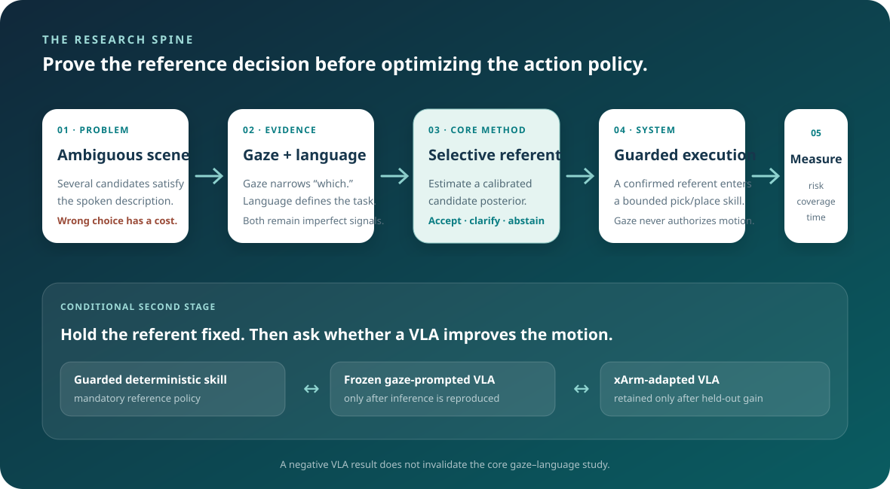

Risk-controlled reference
Estimate which candidate the operator means, preserve gaze uncertainty, and decline to act when the evidence is insufficient. Evaluate error together with the fraction of trials handled automatically.
Research direction · reviewed July 2026
GazePick should be studied as selective gaze–language reference grounding for ambiguous physical manipulation. Its central question is whether a noisy Tobii cue can reduce wrong-target activation at useful coverage. VLA prompting and xArm adaptation remain meaningful—but only as a separate, conditional policy study.

01 · Direction verdict
The proposed task is feasible, visible in a live demonstration, and scientifically testable. The weak framing is a four-component bundle—Tobii, language, VLA, and xArm. The stronger framing identifies one estimation problem, one selective decision, and one physical consequence.
Estimate which candidate the operator means, preserve gaze uncertainty, and decline to act when the evidence is insufficient. Evaluate error together with the fraction of trials handled automatically.
Show that the reference decision reaches a real xArm through a visible confirmation step and independent motion guard. Score intent errors separately from grasp and placement failures.
With the accepted referent held constant, compare a guarded skill, a frozen visually prompted VLA, and an adapted VLA. Keep the learned policy only if it earns measurable held-out value.
02 · Research questions
Each question has a distinct input, outcome, and stopping rule. This ordering prevents a successful robot rollout from hiding a failed reference model—or a better reference cue from being mistaken for a better action policy.
RQ1 · Under controlled visual ambiguity, can calibrated gaze–language fusion reduce wrong-referent activation at a useful decision coverage compared with language only and nearest-object gaze snapping?
Compared with an explicit click, how much time and hand-switching does gaze save, and what extra clarification or confirmation does its uncertainty require?
Given the same accepted target, does a frozen or xArm-adapted VLA improve held-out placement success enough to justify data collection, latency, compute, and reduced interpretability?
| Hypothesis | Expected pattern | What would refute it? |
|---|---|---|
| H1 · fusion | Selective gaze–language fusion lowers wrong-referent risk at matched coverage relative to language only and nearest-gaze snapping. | No risk reduction across useful coverage, or improvement appears only after rejecting nearly all difficult trials. |
| H2 · complementarity | Gaze helps most when language is deictic and candidate appearance is similar; language helps when gaze mass overlaps adjacent objects. | One modality dominates across all controlled strata, making fusion unnecessary. |
| H3 · click trade-off | Click remains the accuracy reference, while gaze competes on target-decision time or reduced manual input. | Gaze is slower or less accurate with no measurable interaction advantage. |
| H4 · selectivity | Validation-fit accept/clarify thresholds move the system along a useful risk–coverage frontier. | Confidence does not predict correctness or does not transfer to held-out users, layouts, and object spacing. |
| H5 · adaptation | Robot-specific adaptation improves policy success with the referent and test scenes held fixed. | Only training scenes improve, or a guarded skill remains equal or better after latency and failures are counted. |
03 · Idea portfolio
All three ideas fit the same system, but they should not compete for equal priority. The first can produce a coherent result without fine-tuning; the latter two become defensible only after their entry gates pass.
| Priority | Research idea | Distinct contribution | Feasibility | Decision |
|---|---|---|---|---|
| A · Core | Selective multimodal referent grounding Candidate posterior from uncertain screen gaze and language, followed by accept, clarify, or fallback. | Risk-controlled physical reference under measured Tobii error; explicit classical and click comparisons. | High: can be implemented before any VLA training. | Commit now. |
| B · Extension | Uncertainty-preserving visual policy interface Compare a hard contour, a soft heatmap, and a candidate-posterior representation using the same accepted intent. | Tests whether preserving uncertainty helps a robot policy beyond existing hard visual prompts. | Medium: requires a compatible frozen policy and controlled prompt ablation. | Enter after RQ1 works. |
| C · Stretch | Low-data xArm adaptation value curve Measure held-out success, latency, and failure as demonstrations increase. | Evidence about when xArm-specific VLA adaptation becomes worthwhile for this narrow task. | Low to medium: data, embodiment adapter, and GPU dependent. | Enter only after compute/data gates. |
It joins calibration, selective prediction, multimodal grounding, and physical manipulation around a clear failure: starting a motion for the wrong object. The contribution is an evaluated decision boundary, not a new sensor combination.
Gaze2Act already uses contours and heatmaps, while Point-VLA and VP-VLA already show explicit visual prompts for VLA grounding. B becomes distinct only if uncertainty representation and selective behavior are central.
A constrained top-grasp task may be solved better by a deterministic skill. That is still useful evidence: it identifies where a general policy is unnecessary and protects the project from performative fine-tuning.
04 · Experimental architecture
A single condition ladder that changes both input and policy confounds causal interpretation. GazePick uses two stages: first fix the robot skill and compare target interfaces; then fix the target and compare robot policies.

Use the same candidate masks, source/destination poses, confirmation rule, and guarded xArm skill for R0 language only, R1 nearest-gaze snap, R2 selective gaze–language fusion, and R3 explicit click.
Primary evidence: wrong-referent activation risk, risk–coverage curve, target-decision time, clarification count, and calibration.
Use the same accepted referent, scene seeds, safety guard, and action convention for P0 guarded skill, P1 frozen visual-prompt VLA, and P2 xArm-adapted VLA.
Primary evidence: pick/place success, completion time, intervention, invalid proposal, compute/latency, and held-out generalization.
05 · Core technical idea
The model does not turn a gaze point into a click. It distributes probability over the image, integrates that mass over each candidate, combines it with language compatibility, calibrates the result, and applies a selective decision rule.
\(G(u,v)\) is a task-window distribution, not a single sample. Its covariance should include recent sample spread and validated screen-mapping error. Integrating over the mask \(M_j\) handles objects of different size more honestly than nearest-centroid distance.
\(s_{\mathrm{lang}}\) scores whether a candidate satisfies attributes or relations in the utterance. For the V1 grammar, language should specify the destination and may optionally eliminate impossible source candidates.
The temperature \(T\), cue weights, and decision thresholds are fit on validation episodes only. A 0.8 posterior should correspond to roughly 80% correctness in the relevant test stratum—not merely rank first.
The simplest useful implementation begins with manually verified candidate masks, a Gaussian gaze model, a small rule-based language score, validation-fit temperature scaling, and explicit thresholds. Open-vocabulary detection and learned fusion are later substitutions—not prerequisites for the research question.
06 · Scope contract
The first version should make ambiguity difficult but manipulation mechanics deliberately simple. A broad open-world demo would create more failure modes than the evidence could separate.
Three similar connectors lie inside a fixture; two colored bins sit at known destinations. The operator looks at one connector and says, “Put this in the blue bin.” Before any motion, the stored trial must reveal whether the intended connector was inferred, whether the system accepted or clarified, and whether confirmation occurred.
07 · Progression rules
Each level answers a useful question and supplies a fallback for the next. A failed gate narrows the claim; it does not erase the work already validated.
Ask a manufacturing/logistics partner for concrete cases, current target-specification method, plausible error consequence, typical objects, cycle-time constraints, and acceptable confirmation behavior. If no matching case exists, present the work as a controlled HRI study rather than a regional industrial solution.
Before gaze or VLA, repeated clicked-target trials must establish the mechanical ceiling. If grasp/place reliability is low, simplify the fixture and object geometry until reference errors can be isolated.
Measure error on independent markers across the exact rendered camera rectangle. Candidate separation must be large enough that a posterior can discriminate objects at useful coverage.
Run R0–R3 offline and end to end. Lock calibration and thresholds before the held-out block. If R2 does not improve risk or interaction cost, stop the primary gaze claim and report the boundary.
Benchmark action representation, control rate, server latency, invalid outputs, and guard compatibility. If the frozen policy cannot meet the task contract, retain the guarded skill and do not collect adaptation data yet.
Use a locked episode schema and group-safe splits. Retain P2 only if it improves held-out policy outcomes over P0/P1 without worsening latency, intervention, or guard rejection.
08 · Position against current work
Current work already demonstrates gaze-conditioned action, visually grounded VLA prompts, and gaze as a learned human-intention prior. GazePick should cite these results as boundaries and place its effort in calibrated, selective, screen-based reference.

Cross-view gaze grounding, perception-level prompting, and action-level conditioning demonstrate that gaze-conditioned VLA is no longer an open novelty claim. GazePick instead targets calibrated screen-gaze selection and an explicit reject option.

OFT makes robot-specific adaptation technically plausible, but its official experiments also illustrate that adaptation has substantial data, compute, and evaluation requirements. It is a gated implementation path, not the project thesis.
| Closest line | What it already establishes | What GazePick must add |
|---|---|---|
| Gaze2Act | Live gaze can condition perception and action in a real VLA system, including object, part, and dynamic intent. | Measured screen-gaze uncertainty, selective decision behavior, matched classical baseline, and risk–coverage evidence. |
| Point-VLA / VP-VLA | Explicit visual regions can resolve text-only spatial ambiguity and improve VLA grounding. | A human gaze-derived distribution rather than a given box, with calibration and repair when the visual cue is uncertain. |
| GazeVLA | Gaze can serve as an intention representation learned from human demonstrations. | Online operator reference as a noisy interaction input; no claim that gaze reveals full intention. |
| GazeGrasp / GAMMA | Gaze can select objects or parameterize modular robot autonomy. | Controlled fusion and selective reliability against both simple gaze snapping and VLA policies. |
| Selective prediction | Reject options trade automatic coverage for lower accepted-case risk. | Translate that framework into wrong-referent activation on a physical manipulation loop. |